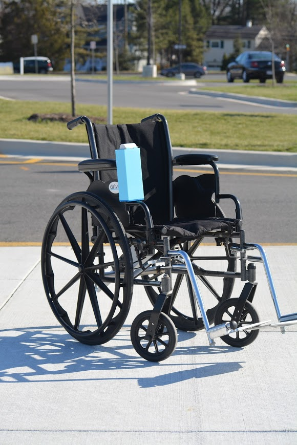
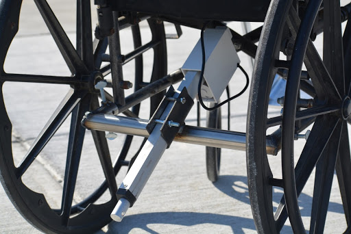

In order to learn HTML and CSS, I created this website. This website
represents a resumé that I can constantly update and share
easily. It also provides me a place to test out new web developement
techniques and concepts. Click the button below to see the annotated
source code for this project!
Through Northeastern's Global Experience, I spent 5 weeks in London
during the summer of 2019. During this time, I took a class titled
"Documentary Filmmaking" and produced a documentary on the effect
Grime music has had on British youth and culture as a whole.
Engineering Design and Development
For my Senior Capstone in the Project Lead the Way curriculum, I was
challenged to develop a problem statement pertaining to the theme of
"wellness". I then used the Engineering Design Process paired with
Agile and Essential Scrum project management techniques
to develop a minimal viable solution.
User Interviews: We obtained data and feedback from
wheelchair users by conducting both online surveys and in person
interviews at local wheelchair rugby tournaments and connecting
with members of the Paralyzed Veterans of America.
Problem Statement: "In areas that are not up to the accessibility code
defined by ADA, manual wheelchair users, without assistance or training
to learn to vertically jump their wheelchair, are unable to navigate
vertical ledges (i.e. curbs, sidewalks, and landings)."


Design Criteria:
Performance: The solution must get the user up a curb in
less than 30 seconds without outside assistance.
Safety: The solution cannot cause the wheelchair to tip,
or cause damage to the wheelchair or user.
Ergonomics: The solution must not require the user to
exert a force greater than the 25th percentile
in any direction.
Size & Weight: The solution must not weigh more than
ten pounds, or add to the overall width of the chair.
Cost: The solution must cost less than $250
to the consumer.